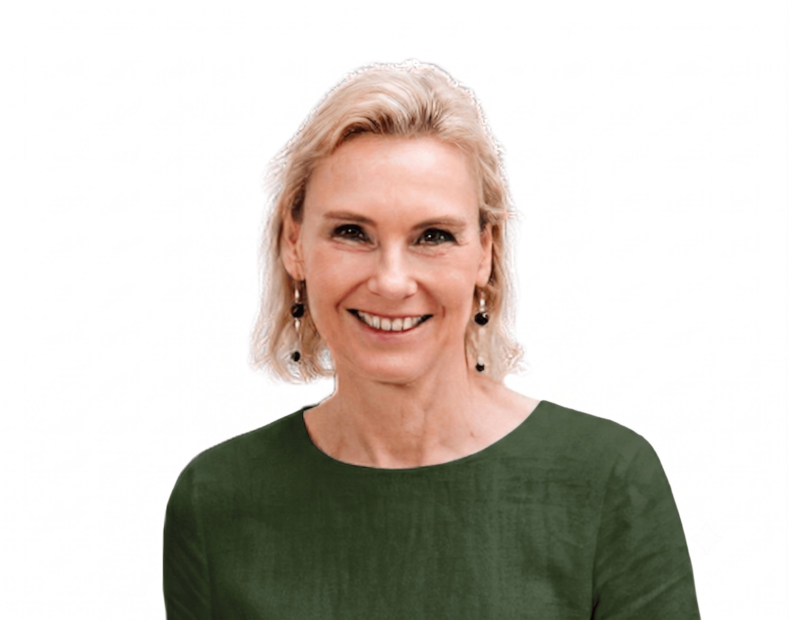
Hallo, ich bin Kathrin. Willkommen! Ich höre auf die Erde und stelle meine Hände in den Dienst deiner Heilung.
Es folgen die vier Grundsätze von Blue Morpho — der individuellen Heilreise im Herzen von Tierra Santa.
Jede Reise wird um eine Person oder ein Paar herum gestaltet. Keine Gruppen, keine geteilte Agenda — nur dein Nervensystem, deine Geschichte, deine Geister.
Das Land, die Architektur und die Stille hier sind nicht nur der Rahmen der Heilung — sie sind Teil von ihr.
Reiki, schamanische Praxis, Ahnenarbeit, Feng Shui und 5-dimensionales Design — verwoben zu einer einzigen, lebendigen Praxis.
Ein Angebot für die Erbauer, Gründerinnen, Heiler und Ältesten dessen, was als Nächstes kommt — Menschen, deren eigene Klarheit Wellen in der Welt schlägt.
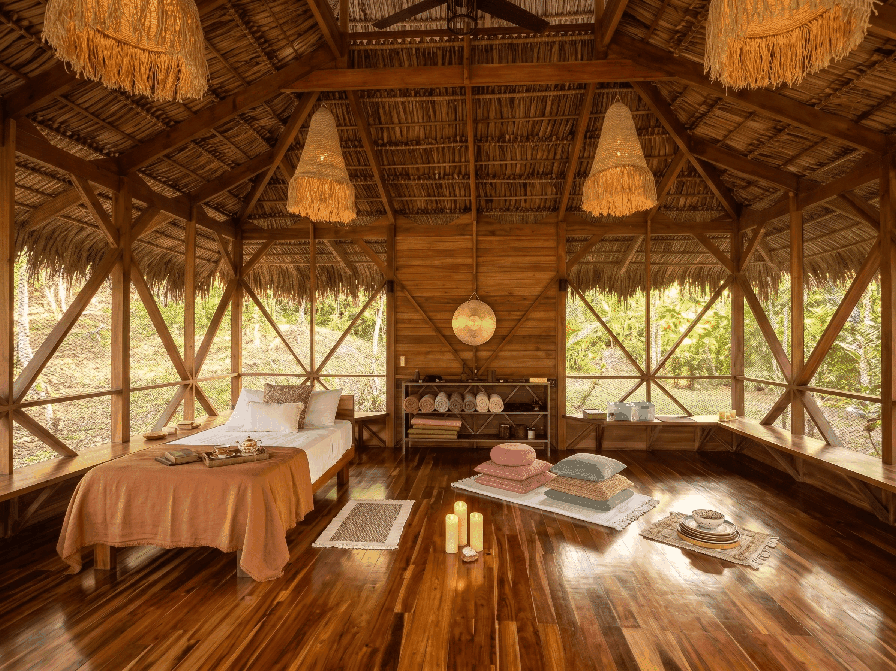
Ein vollständig privater Rahmen für eine Person oder ein Paar. Jeder Tag wird um dich herum gestaltet — deinen Körper, deine Ahnen, deine Bereitschaft. Sechzehn heilige Praktiken, verwoben im Rhythmus des Augenblicks: Zen-Meditation, Reiki, Ahnenarbeit, Klang, Yoga, Qi Gong, Wissen über Heilpflanzen, Feuer- und Wasserzeremonien, Kakao, Tarot, Arbeit mit den Baum- und Tiergeistern der Finca sowie eine an deinen Körper angepasste, ayurvedisch inspirierte Küche.
Ein hochpreisiges, hochwertiges Angebot — aufgebaut auf jahrzehntelanger Praxis und jenen vorbehalten, die bereit sind, in eine wahre Schwelle zu investieren.
Eine Einladung anfragen →Vor meiner Reise nach Costa Rica trug ich schwere Ängste in mir und fühlte mich mir selbst entfremdet. Die Verbindung aus unberührter Natur, der atemberaubenden Architektur, die symbiotisch aus dem Land wächst — von Kathrin geschaffen —, und ihrer individuellen, spirituellen und zutiefst persönlichen Begleitung brachte mich zurück ins Gleichgewicht, löste lang gehegte Ängste und schenkte mir einen völlig neuen Blick auf die Welt und eine erneuerte Ehrfurcht vor der Natur. Ich bin inspiriert, neu ausgerichtet und dauerhaft von quälenden Ängsten geheilt — eine Heilung ganz besonderer Art, die man nirgendwo sonst in dieser Reinheit und Vollständigkeit findet.
Dies ist keine Lodge. Es ist ein magischer Ort, den ich entworfen und erbaut habe, um Transformation zu tragen. Die Kraft des Universums — getragen durch den Orionsgürtel — trifft hier auf die lebendige Kraft der Erde, und die Architektur selbst wird zur Mitheilerin.
In jedem Winkel, jeder Schwelle und jeder Sichtachse ist heiliges Wissen eingebettet — und genau dieses Wissen nutze ich heute, um jene zu begleiten, die kommen.
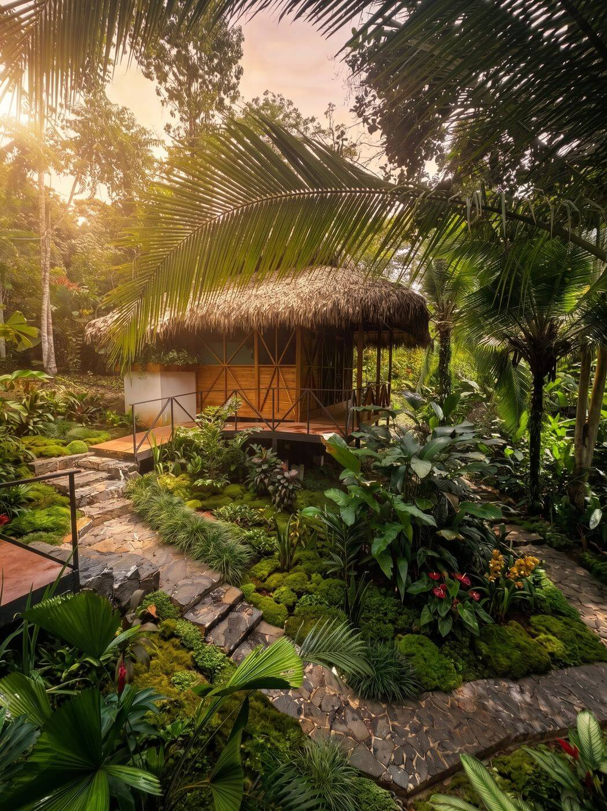
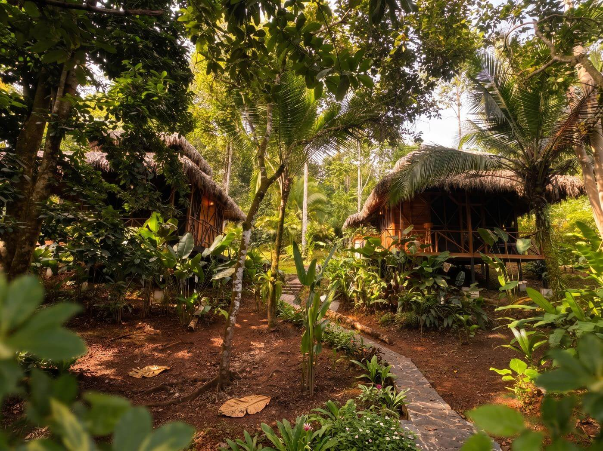
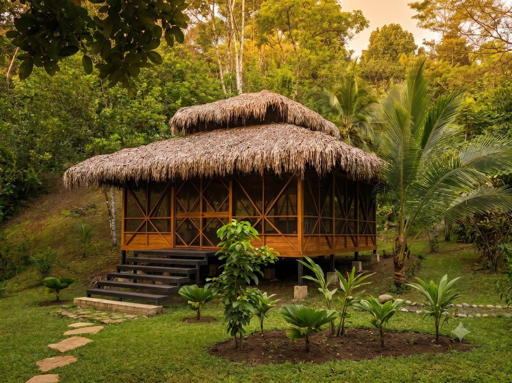
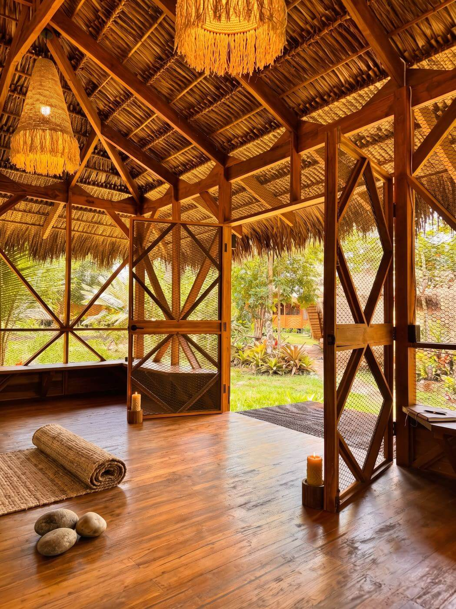
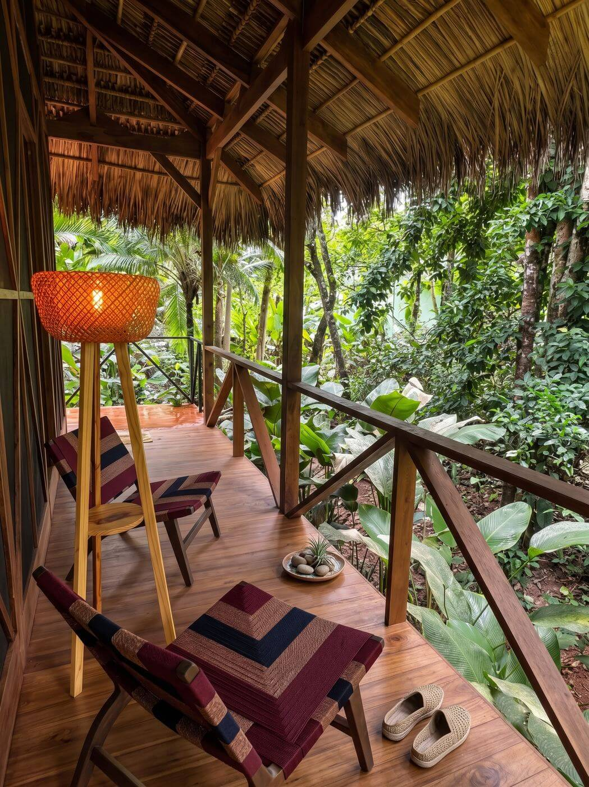
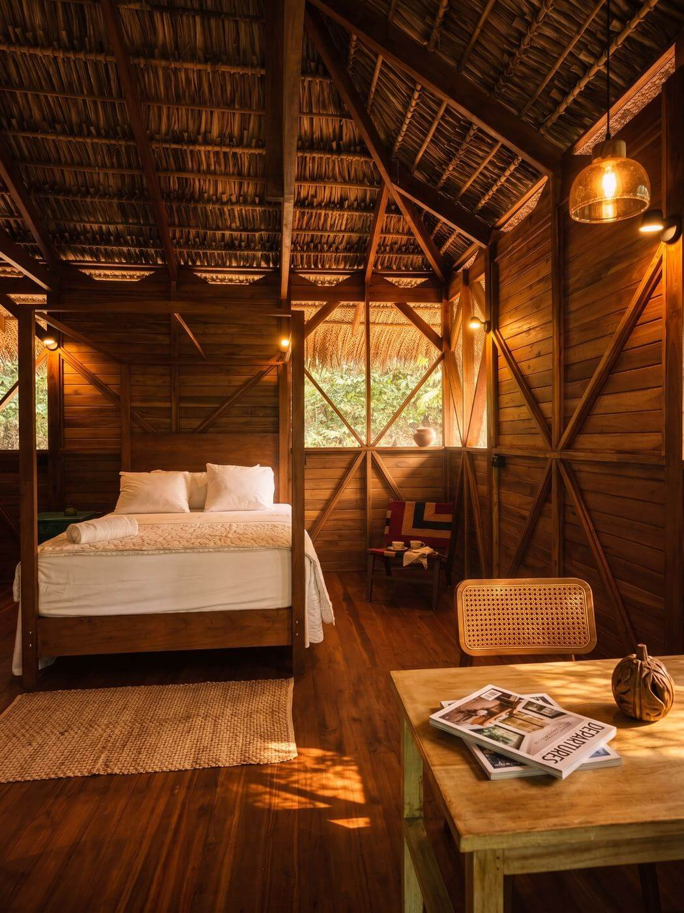
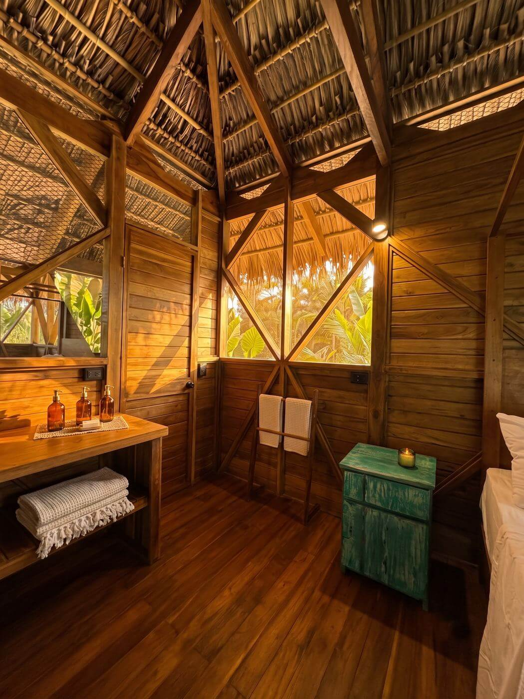
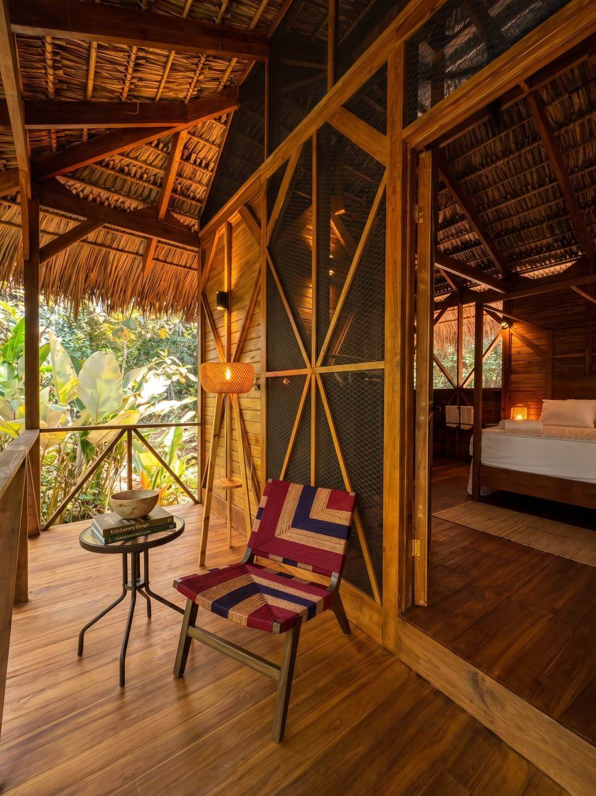
Tierra Santa steht auf Land, das den Ngäbe-Buglé, der größten indigenen Nation Costa Ricas und Panamas, seit jeher heilig ist. Seit Jahren gehe ich an der Seite ihrer Ältesten, Heiler und Gesangshüter — und empfange Lehren über die Heilpflanzen des Regenwaldes, die Geister der Flüsse und Berge sowie die uralten Feuer-, Erd- und Wasserzeremonien, die in der Diquís-Region noch immer lebendig sind.
Dies ist keine Folklore. Es ist eine lebendige Tradition. Ihre Großzügigkeit, ihr Vertrauen und ihre fortwährende Präsenz sind in jede Heilreise eingewoben, die hier stattfindet.
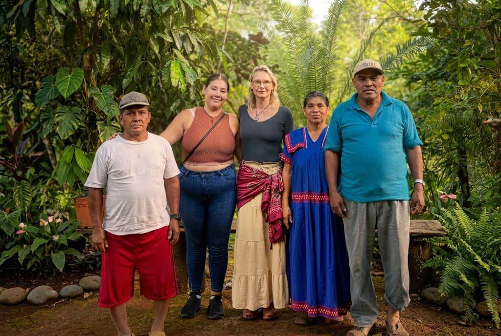
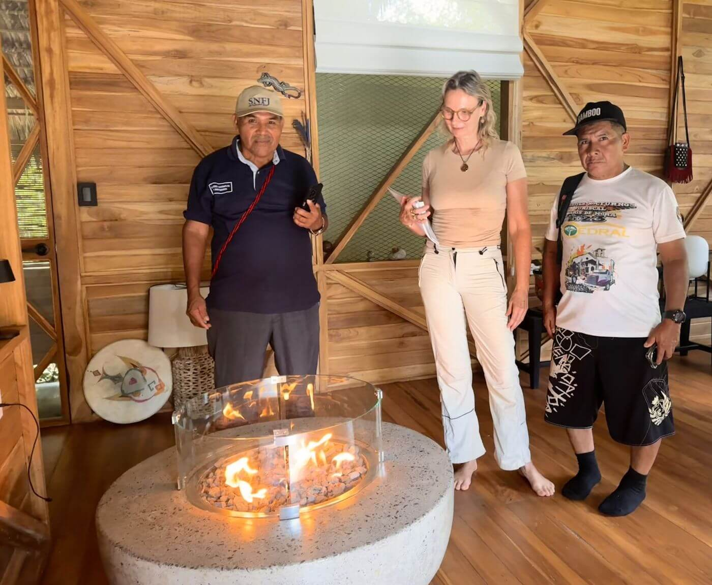
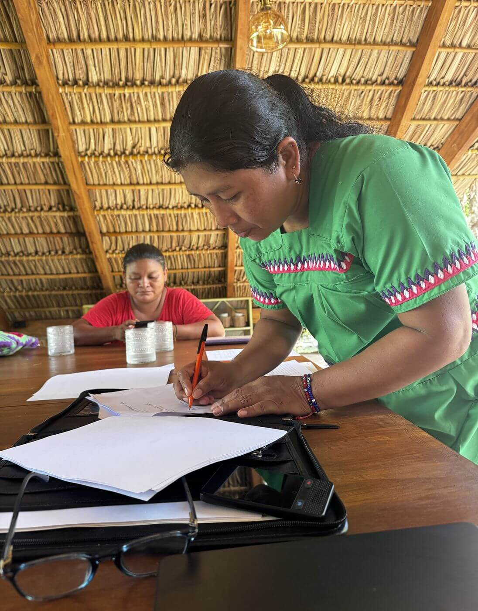
„Das Land erinnert sich. Die Ältesten erinnern sich. Wir sind nur die Brücke." — eine auf der Finca empfangene Lehre
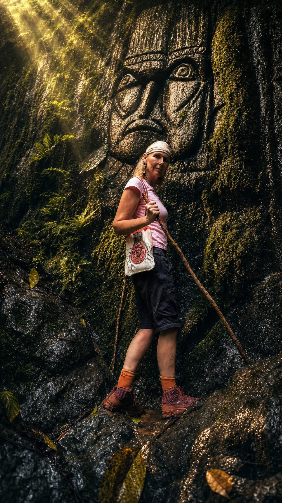
Seit drei Jahrzehnten hat sich Kathrin leise einen internationalen Ruf als eine der wenigen Praktikerinnen erarbeitet, die die Strenge europäischer Architektur mit der Raumweisheit des Ostens vereinen. Als ausgebildete deutsche Innenarchitektin, 1997 mit dem Deutschen Innenarchitekturpreis ausgezeichnet, studierte sie anschließend viele Jahre bei Grandmaster Yap Cheng Hai — einer der bedeutendsten Autoritäten des klassischen Feng Shui — und wurde in dieser Tradition als Feng-Shui-Meisterin zertifiziert.
Aus dieser Begegnung der Disziplinen entwickelte sie SpiritPlanning®, ihre eigene architektonische Methode: eine Synthese aus daoistischer Harmonie und westlicher Baukultur, die private Wohnhäuser ebenso wie öffentliche Projekte geprägt hat. Sie ist Gründerin der Genius Loci Baukultur GmbH, Autorin von SpiritPlanning: CoCreation und Dozentin an der Peter Behrens School of Arts in Düsseldorf.
Feng Shui ist in seiner ursprünglichen Form keine Dekoration — es ist schamanisches Wissen, eine indigene Kenntnis davon, wie die lebendigen Kräfte von Land, Ahnen und Kosmos ein menschliches Leben formen. Dreißig Jahre innerhalb dieser Tradition wurden zu Kathrins Brücke zu den Ngäbe-Buglé: In diesem Wissen begegnen sie und die Weisheitshüter des Stammes einander auf Augenhöhe, denn — jenseits unterschiedlicher Sprachen und Landschaften — ist es dasselbe Wissen.
Heute lebt und arbeitet sie auf der Halbinsel Osa in Costa Rica, wo sie Tierra Santa entworfen und erbaut hat — eine 5-dimensionale heilige Architektur — und wo sie, ausschließlich nach Vereinbarung, die individuellen Heilreisen jener begleitet, die auf der Suche nach echter Veränderung kommen.
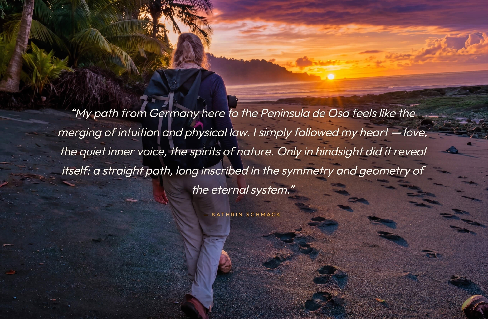
Bei den Ngäbe als „die Reine" bekannt, versteht sich Kathrin als eine indigene, transkulturelle weibliche Präsenz mit europäischen Wurzeln. Nach einer Initiation mit dem Puma-Geist am Strand von Matapalo begann sie ein langes Studium des I Ging und überträgt derzeit dessen vierundsechzig Hexagramme in ein Kalendersystem innerhalb einer erweiterten räumlichen Dimension — ein Werk, das sie den Kindern der Welt widmet.
Ihre Praxis geht an der Seite indigener Ältester, Ökologen und Pädagogen und wurzelt in der Überzeugung, dass die Natur selbst die letzte Lehrerin ist.
Jede Reise beginnt mit einem persönlichen Gespräch. Keine Buchung ohne dieses — wir hören genau hin, ob es passt.
Du wirst empfangen, mit Kakao willkommen geheißen und in einer privaten Villa unter dem Blätterdach eingerichtet.
Tage, die sich um dich gestalten. Zeremonie, Ruhe, Integration — im eigenen Rhythmus des Landes.
Du reist mit Praktiken, nicht mit Versprechen. Integrationsgespräche begleiten dich drei Monde lang nach Hause.
Neben den privaten Reisen angeboten, für jene, die sich zu einem Kreis, einer Gruppe oder der Architektur selbst hingezogen fühlen.
Ein intimer Kreis von Frauen, getragen vom Regenwald. Die gleichen heiligen Elemente wie die private Reise, mit Fokus auf Gruppenenergie.
Mehr erfahren →Ein Gruppenrahmen unter dem wachsamen Geist des Jaguars — Trommeln, Zeremonie und gemeinsame Geschichten am Feuer.
Mehr erfahren →Ein Fachworkshop für Architekten, Designerinnen und Liebhaber heilender Räume — das Wissen hinter Tierra Santa selbst.
Mehr erfahren →Private Reisen werden über ein persönliches Gespräch vereinbart. Schreib mir in deinen eigenen Worten — ich lese jeden Brief.
hola@tierrasantalodge.com